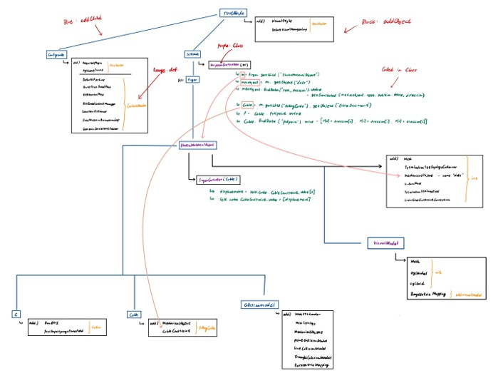

Mesh Optimization
- Reduced simulation mesh density by 66 percent while improving computational efficiency.
- Achieved simulation speeds up to 5.5 times real time in the reported project workflow.

Research Experience
Department of Mechanical Engineering · Seoul National University
Supported system identification and high-fidelity simulation workflows for real-time soft robot modeling and control.
The laboratory analyzes the design and dynamics of biological systems and translates them into robotic and mechatronic systems for human use.
Its research includes bio-inspired soft robots and manufacturing methods for multi-material smart structures. My work focused on simulation efficiency, deformation modeling, and simulation workflow evaluation.

Advanced Intelligent Systems · 2026